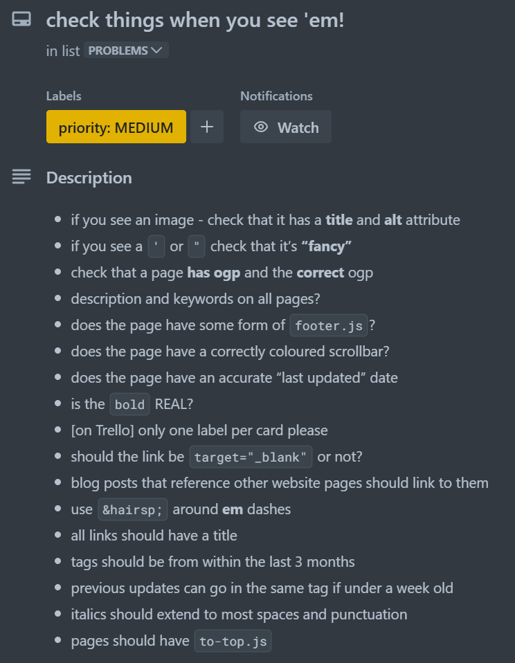

November 28th, 2024 Previous / Next
four years of the pinniped.page
Wow. Just wow. Four years already? That’s 1,461 days!
Without a doubt, the additions I’ve made to my website this year have been my best yet. This year saw bold changes to my website’s design, incredible new projects, and countless other tiny details, all of which come together to form the greatest thing I have ever made.
Usually I renew my website’s domain (pinniped.page) each year, but this time I have added two years.

Looking back at these past four years brings back so many memories. I’ve developed as a person while, as a person, I’ve developed my website.
I don’t remember what my original plans were for this website, but whatever they were, they have most certainly been surpassed by a considerable margin.
But hey, enough attempts at being profound, my website speaks for itself. There’s lots to explore. If you’d like some starting points, read the list of recent updates below.
PREVIOUS BIRTHDAYS:This year has been a busy one. Here’s everything I’ve done since the last list of updates, seven months ago.
APRIL (after the 28th)- Crossword (crosswords) solving progress is now “saved” to your browser history
- New project: Guess the Font
- The Projects and Projects+ pages now have a “random project” button
- More fonts added to Guess the Font
- Updates to the Finite Craft help page
- More items in Finite Craft
- Finite Craft: added a “clear search button”
- Finite Craft: clicking on the search bar selects any text within
- Scrollbars!!!
- Every page says when it was last updated!
- Even more fonts added to Guess the Font
- Underlines no longer break for descenders (g j p q y)
- Project pages have slightly bigger titles
- All (regular) pages now have a to-top button!
- Blog posts now have “previous” and “next” buttons
- The measure (width) of all (most) content has been decreased
- All (most) content has been centred
- Other changes that nobody will notice
- Think Four welcome alerts
- New project: Playlists
- Fixes to the search bar
- Finite Craft can use Pro icons now!
- New project: Small Subways
- Finite Craft version 1.5.1 (“the engineering update”)
- Finite Craft version 1.5.2 (“the music update”)
- 10/10 would recommend now “autosaves” (to your browser history)
- Complete rewrite & redesign of 10/10 would recommend
- Another crossword added to crosswords
- The Projects/Projects+ pages use icons to denote pages with responsiveness issues
- Think Four’s buttons now show their keyboard shortcuts
- After 100 puzzles, Think Four ended, but you can still play all the puzzles
- Complete rewrite & redesign of fa-random
- Additional features added to fa-random
- Additional additional features added to fa-random
- “s” (the HTTP response codes page) has been renamed to “yikes” to avoid confusion with some pages I knew I was going to add
- Another addition of fonts to Guess the Font
- New project: Typewriter Simulator
- Removed “post”
- Updates to Typewriter Simulator
- More things that nobody will notice (especially if you don’t remember how they looked before...)
- The Home page no longer has little notices in the corner
- I made a Status Page Tier List to find inspiration for the new Status page
- The projects search tool was searching too much
- The Projects & Projects+ pages use icons to denote pages that only go to a download
- Updates to quick navigation
- The 404 and “yikes” pages have buttons
- You can now use ‘page up’, ‘page down’, ‘home’, and ‘end’ as keyboard shortcuts on crosswords, among other changes
- Tiny updates to various projects
- Added what I ended up calling the Contact page, completing the About+Status+Contact trilogy
- Completely rewrote and expanded the About page
- Icons on the About page are now randomly picked and positioned!
- Probably some more changes I don’t have record of
- Tiny change to the VALORANT Points calculator that hopefully makes it more clear that you have to choose a region before entering values
- The About page now has links
- At this point many playlists have been added to Playlists (the monthly playlists were added...monthly)
- Complete rewrite and massive improvement to Playlists
- Font Awesome released more icons and styles, so I updated fa-random
- Updates to Think Four’s share feature
- The wordlelele’s share text hides the word if it has not been changed yet
- Some subtitles added, some removed (Home page)
- While writing this blog post I realized that the last few blog posts did not have to-top buttons, so I have fixed that
For a more in-depth look at all the changes, check out the commit history on GitHub.
Maintaining consistency across every page on my website is very important to me, but no easy task. Below is a list of all my standards at the moment. If you find an instance of noncompliance, please tell me!
Thanks for reading. Here’s to another four amazing years.
— Obsidian_Seal
LAST UPDATED: November 28th, 2024